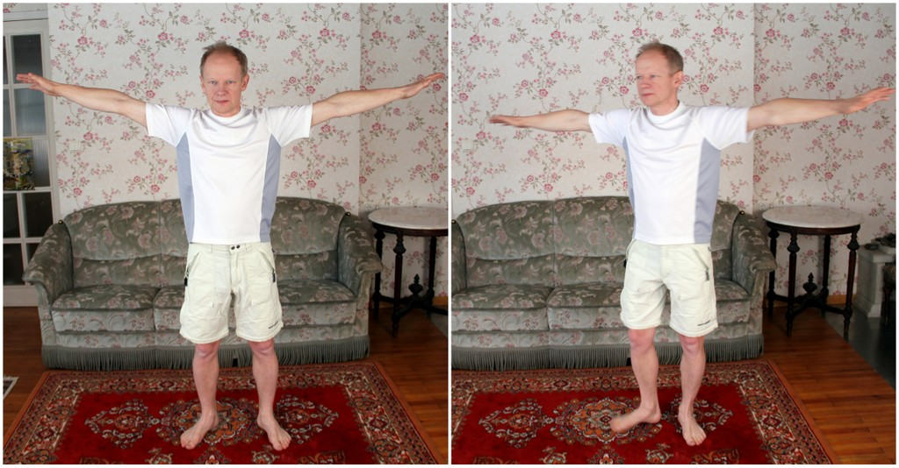
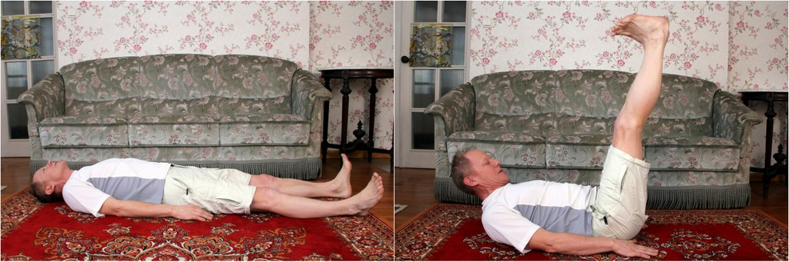
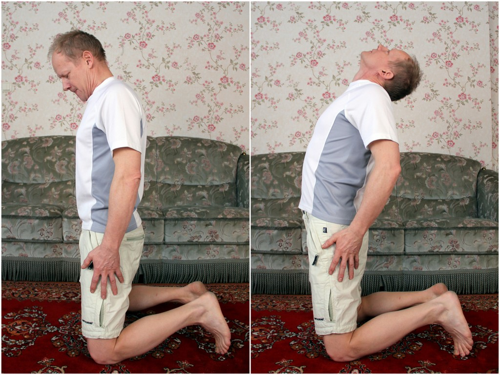
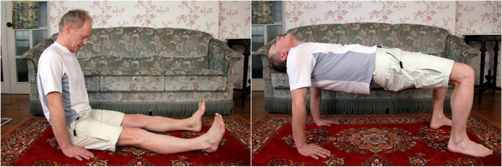
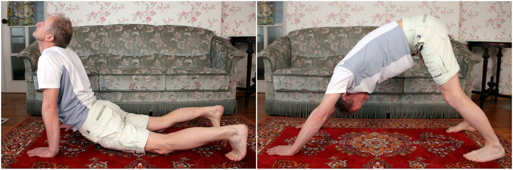

5 tiibetlase harjutused stimuleerivad vere- ja lümfiringet,
närvi-, hingamis- ja seedesüsteemi ning lihaseid ja annavad liigestele
vajaliku koormuse. Soodustavad ja tasakaalustavad energia voolamist
keha energiakeskustes. Elustavad energiakeskustele vastavate närvide,
siseelundite ja näärmete tegevust. Harjutustega alustamine ei nõua
erilist painduvust ega jõudu. Rituaali saamisel igapäevaelu
lahutamatuks osaks tasakaalustub sinu meeleseisund, paraneb tervis ja
kasvab energiatase.
Harjutuse nr
Max kordade arv
1
21
2
21
3
21
4
21
5
21
5 tiibetlase energiaharjutused samm-sammult

Esimene harjutus. Algseis käed külgedele
suunatud, jalad õlgade laiuselt, silmad lahti. Pöörled mõned ringid
päripäeva sellise kiirusega, et tekiks tunne, et kohe-kohe võib pea
ringi käima hakata. Samas ei peaks seda piiri mingil juhul ületama.
Seisma jäädes püüa teadvustada tekkinud pöörise tunnet oma kehas.

Teine harjutus. Lebad selili soojal alusel,
käed puusade kõrval, peopesad vastu maad. Nina kaudu sügavalt sisse
hingates surud lõua vastu rindkere ja tõstad võimalikult sirged
jalad üles. Puusad ei kerki põrandalt. Sügavalt välja hingates
liigub algasendisse esmalt pea, seejärel jalad. Hetk lõdvestumiseks.

Kolmas harjutus. Põrandat puudutavad põlved
ja varbaotsad. Käed puusaliigestel. Lõug vastu rinda. Sügavalt kopsu
ülemisse osasse sisse hingates ajad pea kuklasse, õlad tõusevad
üles, venitad selgroogu ja surud tiivad taha.

Neljas harjutus. Istud sirge seljaga,
peopesad puusade juures, sõrmed ettepoole suunatud. Lõug surutud
vastu rinda. Sisse hingates liigub pea kuklasse, puusad tõusevad
üles, kujundad oma kehaga midagi söögilaua-taolist. Välja hingamisel
surud lõua vastu rinda ja liigud tagasi sirge seljaga istesse.
Söögilaua-asendis pingutad korraks kõiki lihased.

Viies harjutus. Toetud päkkadele ja
peopesadele. Sisse hingates tõmbad lõua vastu rinda ja lükkad puusad
üles. Väljahingamisel tagasi alla liikudes lased pea kuklasse
vajuda. Nagu kolmanda harjutuse juures, surud ka siin selga ja tiibu
tahapoole ning peamine pinge ei ole mitte vöökohas vaid rinnaku
osas. Selg ja käed liiguvad ühte tasapinda, jalad püüa põlvedest
sirged hoida ning kannad püüdlevad põrandat puudutama. Selles
harjutuses pingutad nii ülemises kui alumises asendis hetkeks kõiki
lihaseid.